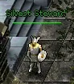
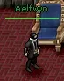

Your first ten minutes on the mainland
The same in all three towns:
- Click the spawn gate. That is where you come back to life from now on.
- Align at the Steward who stands next to the gate, if this is the town of your build. You get the extra orb, a first batch of experience, and the patron will talk to you.
- Go to the patron in the town's hall and take a mission.
- Walk the town and take every quest before you go out. Most can run side by side, and many share a road.
- Find the bank, and the portal to Lotor's Summer Palace outside town. You will want both later.


A town's Steward, here Silvest'sWiki

A town's patron, here Lord AelfwynWiki A granite portalWiki
A granite portalWikiWhat changes on the mainland is death. Away from the towns' safe zones, dying wears down your gear for good, and on some servers your backpack stays in a grave where you fell. Most of the land around each starting town has been a safe zone since 2022, so the first levels are forgiving. See Death.
The patron: your main source of levels
Each town's lord gives missions to those aligned with the town: "slay 20 of this creature". The creature is picked for your level, somewhere near town. You can repeat them without end.
They are worth more than any other single thing you can do below level 50. Our archer went from level 10 to 35 in four days of play, mostly on missions. What one mission paid, as experience and the same again as experience pool:
| Level | Experience per mission |
|---|---|
| 16 to 18 | about 31,000 |
| 19 | about 49,000 |
| 23 to 27 | about 76,000 to 79,000 |
| 28 to 29 | about 106,000 to 118,000 |
| 30 to 34 | about 119,000 to 128,000 |
| 35 | about 177,000 |
Compare that with a one-off quest of the same levels, which pays 10,000 to 40,000 once. The one-off quests are for gear, gold, bags and access. The missions are for levels.
Each mission also gives one coin of the town (Orcish Coin in Krog, Krythan Coin in Silvest, Soluri Coin in Whisperdale), some faction with the town, and now and then a Scroll of Return to it.
The patron set, and how you get it now
Both guides are out of date here. They describe a Lady in another town (Maraket, Varg, the Vezryl estate) who hands you a piece of armor each time your faction passes a threshold. Since a patch in 2025:
- The Lady stands next to her Lord, in the town's own hall, and keeps a shop.
- You buy the pieces with the coins the missions give.
- The shop also sells a Stone of the town, which teleports you to the Lord.
This is confirmed three ways: the patch notes say so, the game's item table holds the three coins and three stones, and our archer's log shows one coin for each of 21 missions.
The ten pieces are the same in all three towns except for the main attribute (Strength in Krog, Intelligence in Silvest, Dexterity in Whisperdale) and the second one (Constitution in Krog, Strength in the other two). None of them has a level requirement.
| Piece | Main | Second | Health | Armor | Price in coins (see below) |
|---|---|---|---|---|---|
| Necklace | +1 | +1 | +25 | 2 | 1 |
| Ring | +2 | +1 | +25 | 4 | 2 |
| Gloves (Bracers in Whisperdale) | +3 | +1 | +15 | 15 | 3 |
| Boots | +3 | +2 | +25 | 25 | 4 |
| Cloak | +5 | +2 | +35 | 15 | 4 |
| Helm | +5 | +2 | +25 | 20 | 5 |
| Belt | +3 | +2 | +15 | 17 | 6 |
| Leggings | +5 | +3 | +40 | 30 | 8 |
| Guardian (a shield) | +5 | +40 | 28 | 10 | |
| Armor | +8 | +50 | 33 | 10 | |
| All ten | +40 | +14 | +295 | 189 | 53 |
The prices are our reading, not a stated fact. They are the "cost" the game's item table gives each piece, which is 1 to 10 where ordinary armor costs thousands, in the same pattern for all three towns. Nobody has written down the shop's prices, and we have not opened it ourselves. If they hold, the whole set is 53 missions, and the best buys for the coins are the Cloak and the Helm. We also do not know whether the old faction thresholds still gate what the shop will sell you.